Do primeiro briefing ao site publicado: como dei à Lueur nome, luz, vidro e uma identidade que se reconhece sem precisar de adjetivo.
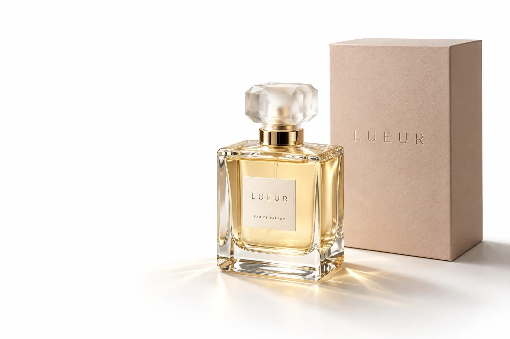
Lueur é a essência que marca por onde passa.
Procurei um mundo claro e quieto, que escurece aos poucos, como o dia. O perfume é o único objeto e a luz faz o trabalho de decoração.
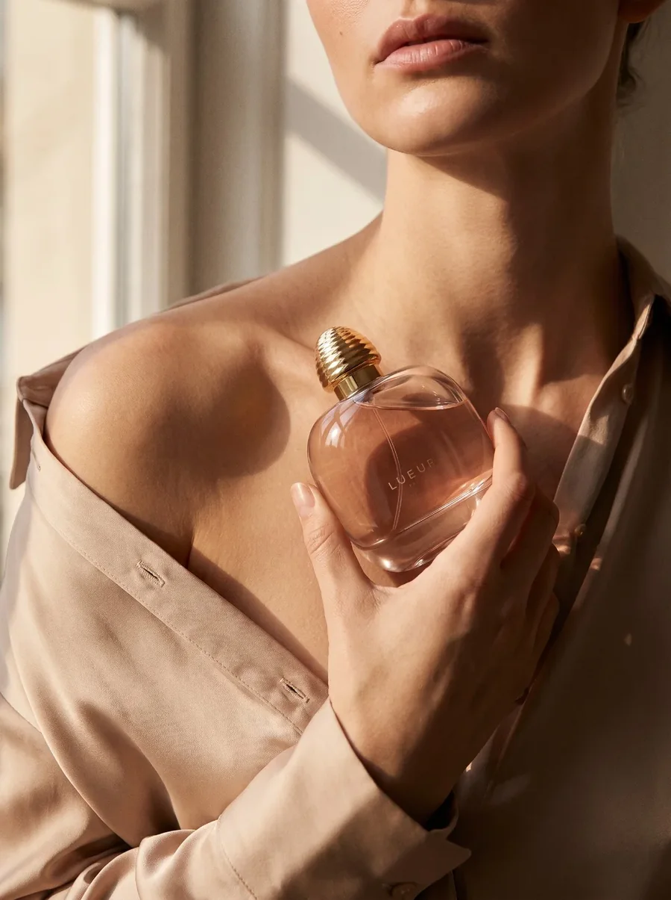
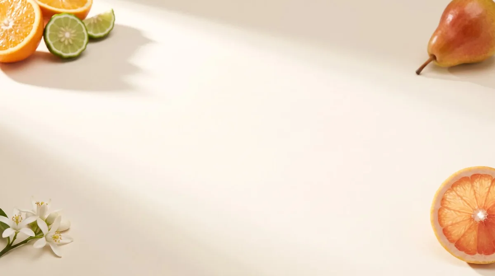
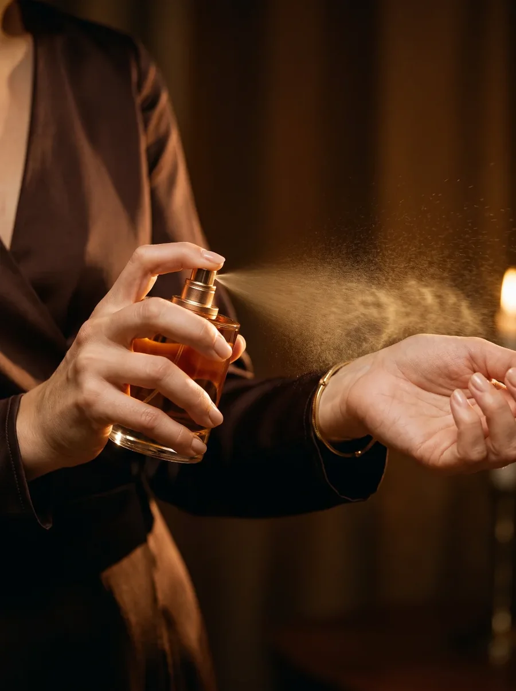
O sistema nasceu do nude e do branco. Mostro aqui só o que uso na página, separado entre o que sustenta a marca e o que apoia.
Comecei com uma ideia, errei a mão e voltei ao que importava.
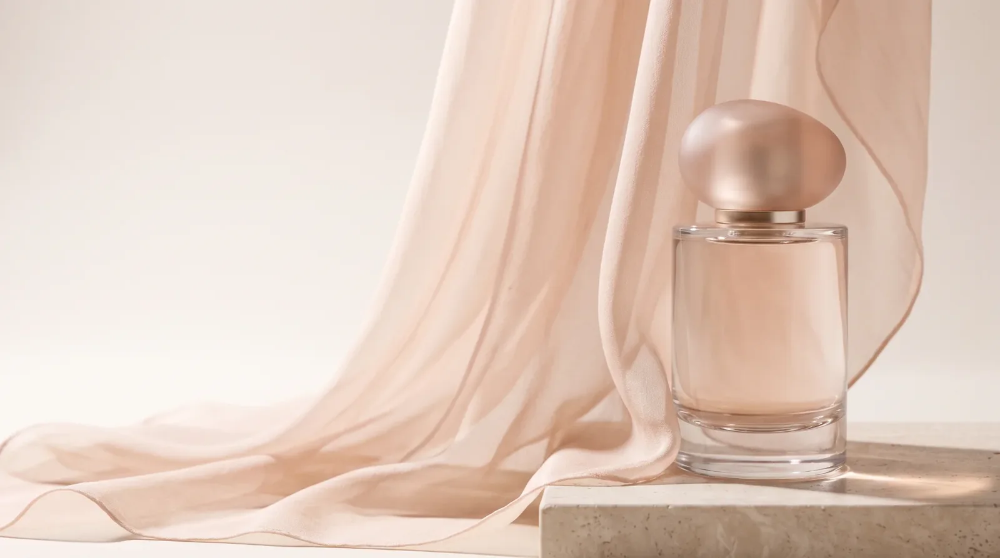
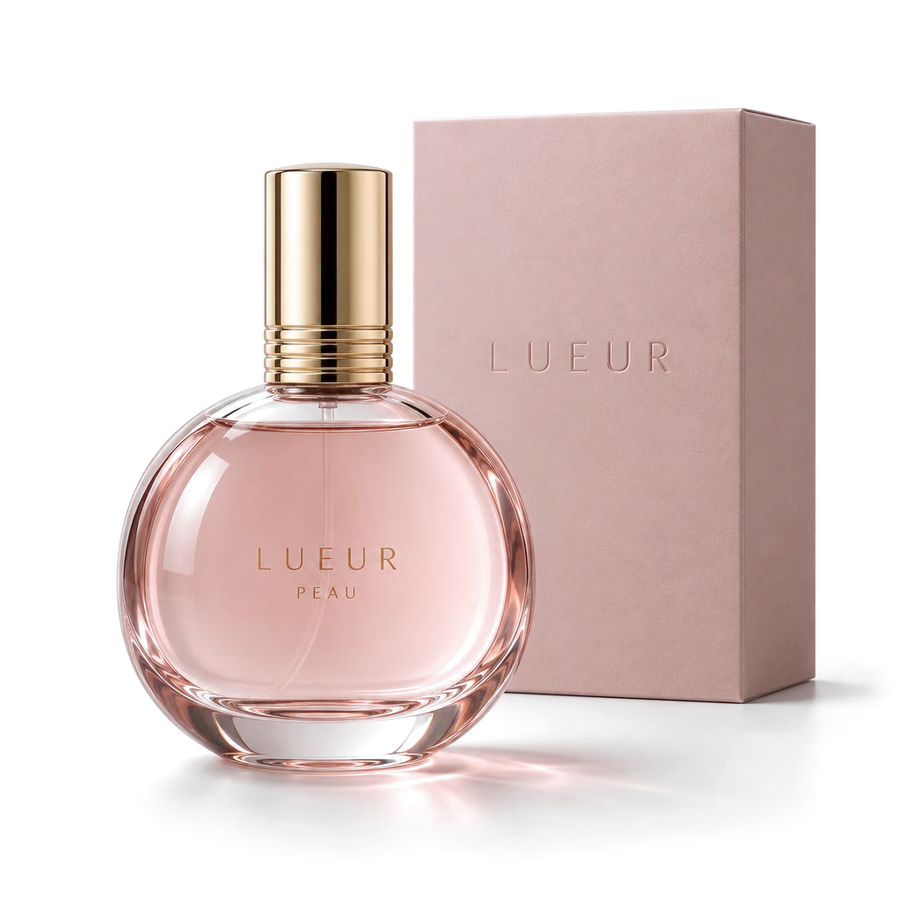
Eu queria algo real e impactante: passar a sensação de uma fragrância de verdade.
Por isso o vidro precisa parecer vidro, com reflexo e sombra no chão, e a caixa precisa parecer papel. Quando a imagem é real, o perfume deixa de ser promessa e passa a ser presença.
Arraste a linha para comparar a abertura do site no primeiro rascunho e na versão final.
AntesUma cena decorada. O frasco dividia espaço com tecido, pedra e cor, e a imagem servia para qualquer marca.
DepoisTirei o cenário e deixei o vidro em foco. Fundo branco, caixa ao lado e uma luz que desenha o contorno.
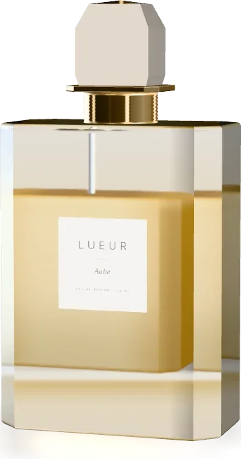
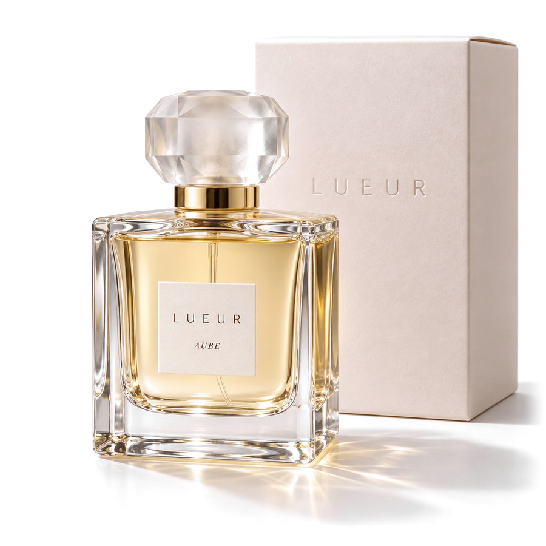
AntesUm render simples, sem caixa e com pouca nitidez. Parecia um recorte colado na página.
DepoisVidro com reflexo, sombra no chão e uma caixa nude. Suavizei as bordas para o recorte não aparecer.
Deixei só o título e o frasco. As notas aparecem depois, quando a pessoa começa a rolar.
Afastei as linhas das notas do frasco, sem encostar.
Os frascos têm fundo transparente com margem suave, e assentam em qualquer cor.
Reduzi os frascos para a página respirar e a leitura vir primeiro.
Deixei a tela de cada perfume estática. Um movimento pequeno atrapalhava a leitura.
O fluxo existe do começo ao fim, com aviso claro de que nada é cobrado.
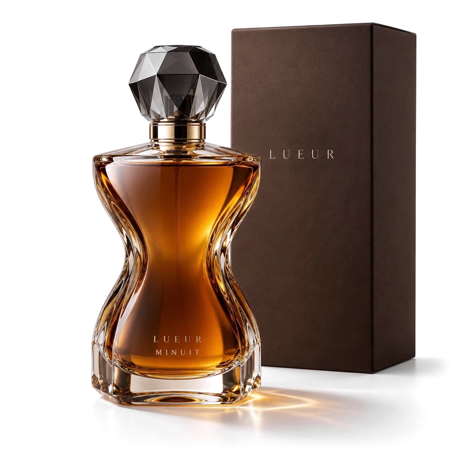
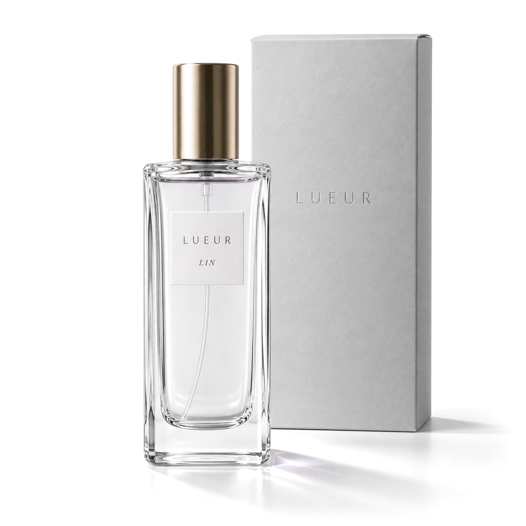
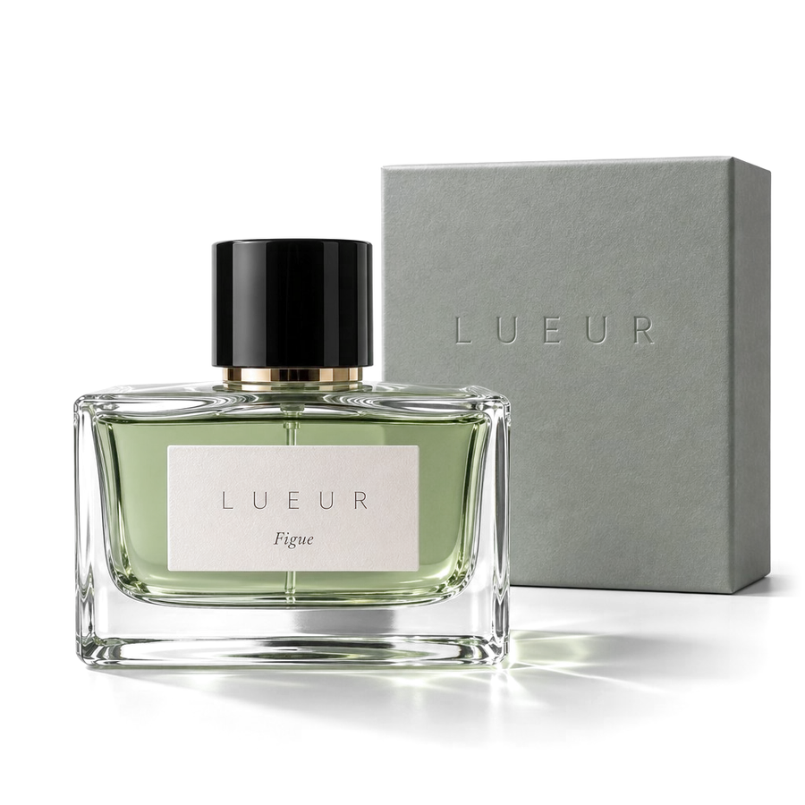
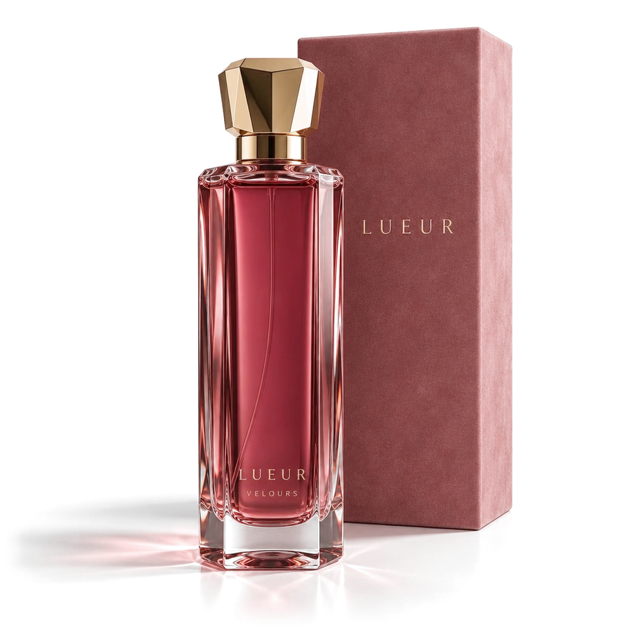